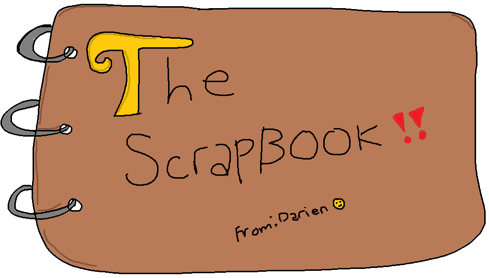

Memories & Sketches
Welcome to the digital journal. Tap anywhere outside or use the top right corner to close it up.
💡 Drop an image below to pin it temporarily to the page:

Welcome to the digital journal. Tap anywhere outside or use the top right corner to close it up.
💡 Drop an image below to pin it temporarily to the page: